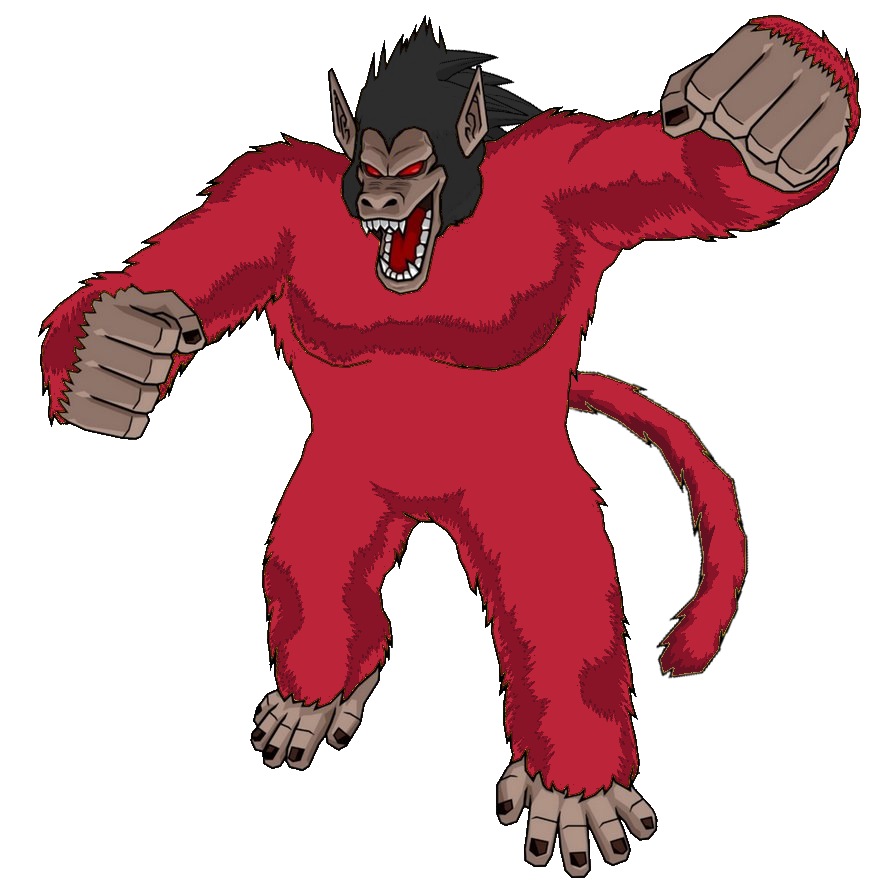
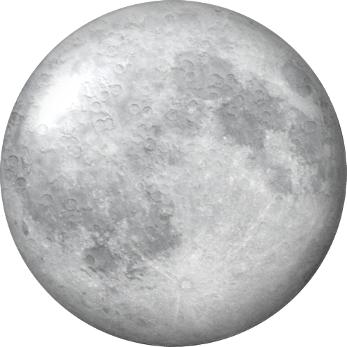
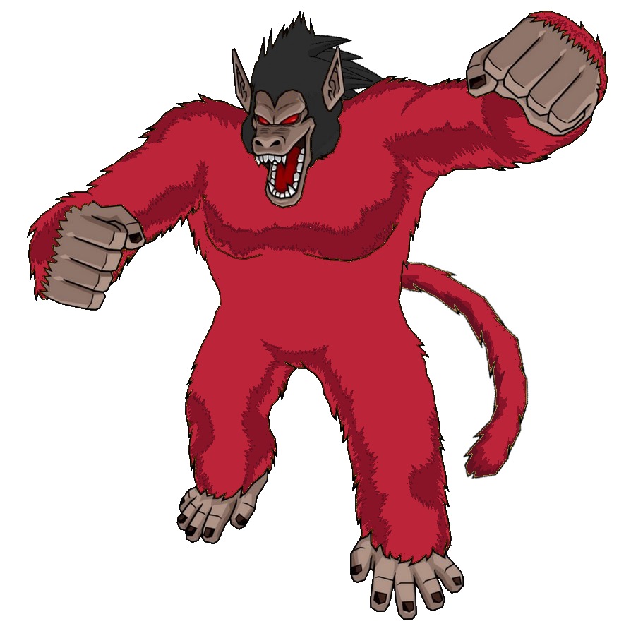
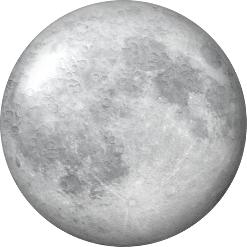

Mono Gigante
El Mono Gigante es una transformación de Goku que ocurre cuando se expone a la
luz de la luna llena y su cola de saiyajin está intacta. Esta transformación aumenta significativamente
su tamaño, fuerza y agresividad, pero también lo hace más impulsivo y menos racional.
El Mono Gigante es una de las formas más peligrosas de Goku, ya que su poder se descontrola y
su instinto primitivo toma el control.
Habilidades: Durante la transformación en Mono Gigante, Goku obtiene una fuerza sobrehumana y una resistencia extraordinaria, capaz de destruir montañas con un solo golpe. Sin embargo, su mente pierde parte de su raciocinio, lo que lo convierte en una amenaza tanto para sus amigos como para sus enemigos. Esta transformación solo puede ser detenida si la cola de Goku es destruida o si se interrumpe la luz lunar que lo activa.
 


